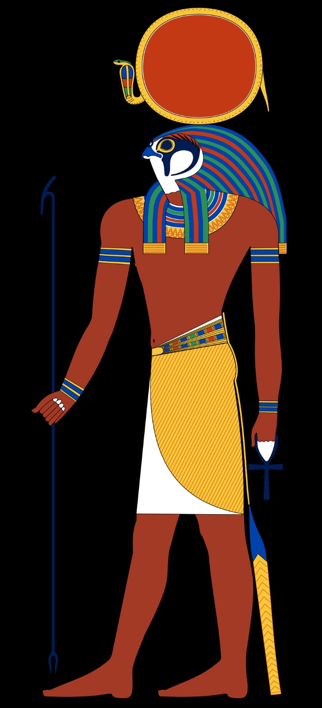
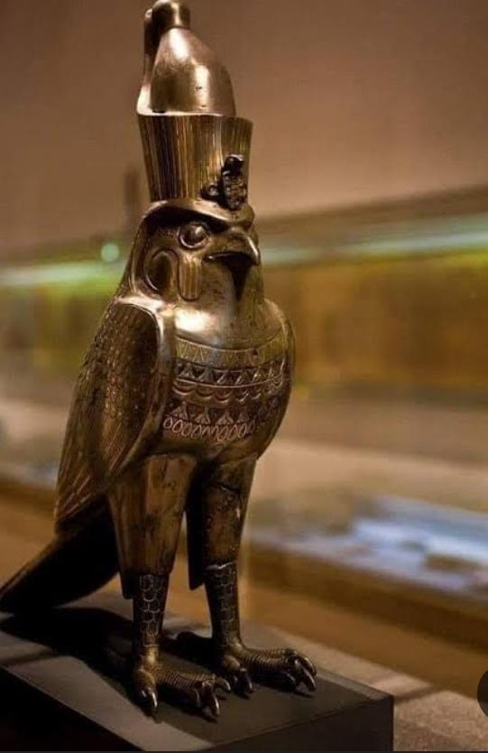
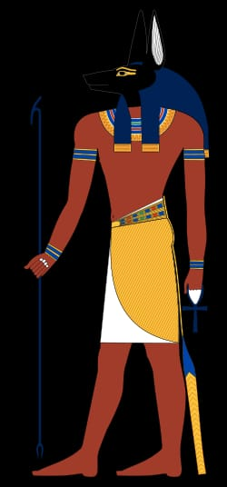
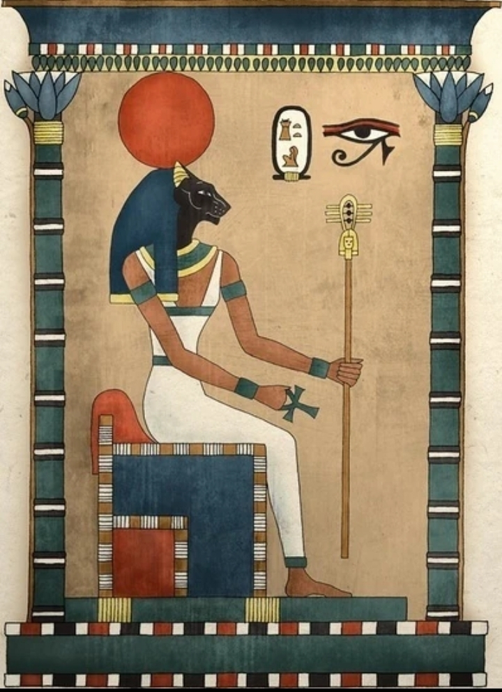
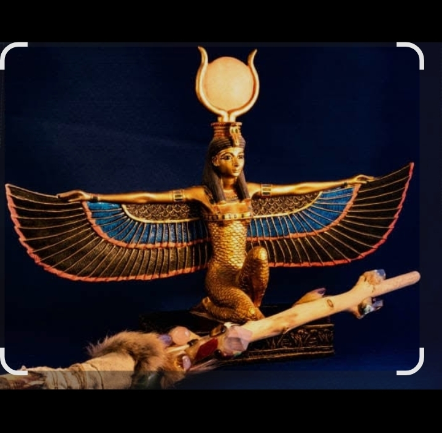

الإله رع
المجال / الوظيفة:
إله الشمس وخالق الكون عند المصريين القدماء.
الشكل أو الهيئة:
رجل برأس صقر فوق رأسه قرص الشمس محاط بأفعى .

الإله أوزوريس
المجال / الوظيفة:
إله الموت والعالم الآخر والبعث بعد الموت.
الشكل أو الهيئة:
رجل ملفوف مثل المومياء ويرتدي تاج مصر العليا.

الإله حورس
المجال / الوظيفة:
إله السماء والملكية.
الشكل أو الهيئة:
رجل برأس صقر

الإله أنوبيس
المجال / الوظيفة:
إله التحنيط وحارس المقابر.
الشكل أو الهيئة:
جسد إنسان ورأس ابن آوى.

الإله باستت
المجال / الوظيفة:
إلهة الحماية والبيت والخصوبة.
الشكل أو الهيئة:
امرأة برأس قطة.

الإله إيزيس
المجال / الوظيفة:
إلهة الأمومة والسحر والحماية
الشكل أو الهيئة:
امرأة ترتدي تاجًا علي شكل عرش.